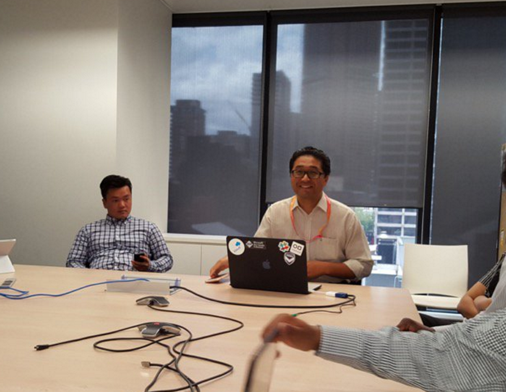
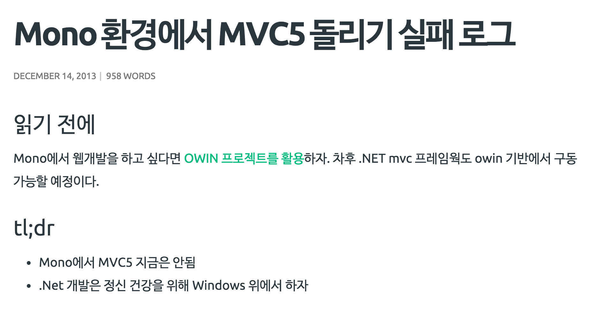
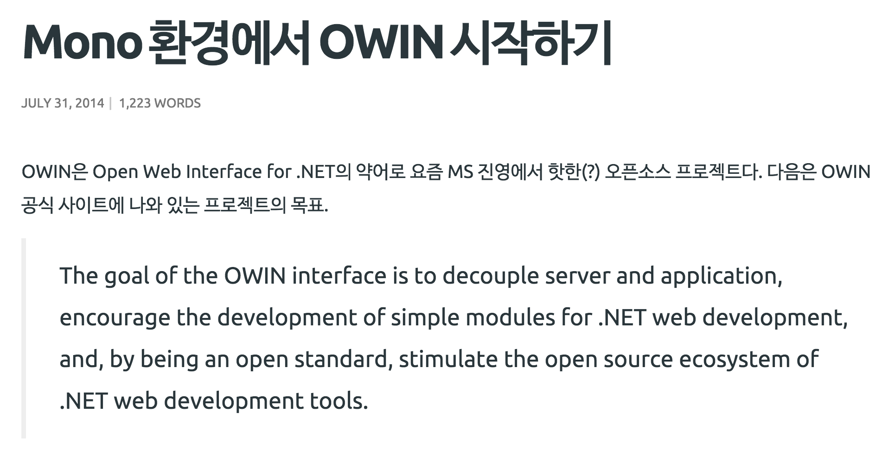
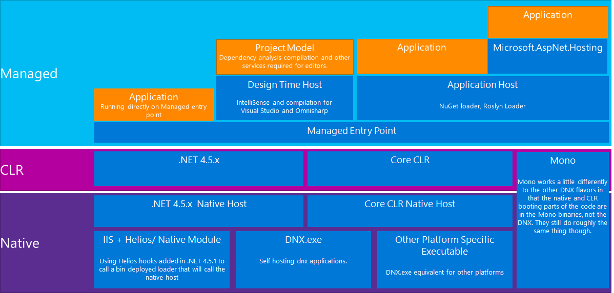

name: inverse layout: true class: center, middle, inverse --- <h1 style=" font-size: 106px; letter-spacing: -10px; line-height: 0.95; word-spacing: -8px;"> 좋은거 같이 씁시다 <span style="font-size: 130px">ASP.NET Core</span> </h1> <p><span style="opacity: 0.5;">크로스플랫폼에서 ASP.NET Core 애플리케이션 개발하기</span></p> <p>김용균 (@haruair)<span style="margin-top: 10px; display: block;">이상한모임 / Kobe Creations</span></p> --- <h1 style=" font-size: 106px; letter-spacing: -10px; line-height: 0.95; word-spacing: -8px;"> 간단하게 설문조사 <span style="display:block; opacity:0.5">사상검증 아닙니다</span> </h1> --- <h1 style=" font-size: 106px; letter-spacing: -10px; line-height: 0.95; word-spacing: -8px;"> 윈도우 없음 못산다 <span style="display:block; opacity: 0">윈도우 없이 잘산다</span> </h1> --- <h1 style=" font-size: 106px; letter-spacing: -10px; line-height: 0.95; word-spacing: -8px;"> <span style="display:block; opacity: 0.5">윈도우 없음 못산다</span> 윈도우 없이 잘산다 </h1> --- <h1 style=" font-size: 74px; letter-spacing: -4px; line-height: 0.95; word-spacing: -2px;"> 제가요 애플빠처럼 보이지만 <span style="display: block;">그렇다고 애플빠는 아닙니다</span> </h1> <span style="display:block; opacity: 0.5">아이폰, 아이맥, 아이패드, 맥북에어를 쓰고 있지만</span> --- <h1 style=" font-size: 106px; letter-spacing: -10px; line-height: 0.95; word-spacing: -8px;"> <span style="font-size: 260px">20여년</span> <span style="display: block; font-size: 90px; opacity: 0.0;">윈도우와 함께 보낸 시간</span> </h1> <p style="opacity: 0; margin: 0; margin-top: -30px">도스까지 치면 더 깁니다. 애플 경험 4년 밖에 안됩니다.</p> --- <h1 style=" font-size: 106px; letter-spacing: -10px; line-height: 0.95; word-spacing: -8px;"> <span style="font-size: 260px; opacity: 0.5">20여년</span> <span style="display: block; font-size: 90px;">윈도우와 함께 보낸 시간</span> </h1> <p style="margin: 0; margin-top: -30px">도스까지 치면 더 깁니다. 애플 경험 4년 밖에 안됩니다.</p> --- <h1 style=" font-size: 106px; letter-spacing: -10px; line-height: 0.95; word-spacing: -8px;"> 호주에서 만난 <span style="display: block;">진성 마소덕후</span> </h1> --- <h1 style="font-size: 106px; position: absolute; z-index: 100; left: 5%; top: 0; letter-spacing: -10px;text-align: left; line-height: 0.95; word-spacing: -8px; padding: 20px; background: rgba(0,0,0, 0.8);">저스틴님 <span style="font-size: 87px;display: block;">말씀하시길,</span></h1>  --- <h1 style=" font-size: 140px; position: relative; z-index: 100; letter-spacing: -10px; line-height: 0.95; word-spacing: -8px;"> C# 짱짱맨! </h1> <span>※ 인용이 정확하지 않을 수 있습니다.</span> --- <h1 style=" font-size: 74px; letter-spacing: -4px; line-height: 0.95; word-spacing: -2px;"> <del style="opacity: 0.5">그렇게 영업 당하고</del> <span style="display:block">C#을 공부하게 되는데</span> </h1> --- <h1 style=" font-size: 74px; letter-spacing: -8px; line-height: 0.95; word-spacing: -2px;"> <span style="display:block">윈도우 환경이 없어서</span> <span style="opacity: 0.5; font-size: 70px">멀티 플랫폼에 급관심</span> </h1> --- <img src="res/mono-gorilla.svg"> <p style="font-size: 40px;">Mono</p> --- <div><img src="res/mono-gorilla.svg" style="width: 70px;"></div> <h1 style=" font-size: 74px; letter-spacing: -4px; line-height: 0.95; word-spacing: -4px;"> <div>멀티플랫폼에서 구동 가능한</div> C# 오픈소스 플랫폼</h1> <div style="margin-top: 20px;"> <div>C# 컴파일러(1.0 - 5.0)</div> <div>모노 런타임(ECMA CLI)</div> <div>기본 클래스 라이브러리</div> <div>모노 클래스 라이브러리</div> <div>멀티 플랫폼 지원</div> </div> --- <h1 style=" font-size: 80px; letter-spacing: -6px; line-height: 0.95; word-spacing: -3px;"> <span style="display: block; opacity: 0.5">이렇게 문제는 해결되고</span> 스터디는 순조롭게 진행 </h1> --- <div style="width: 100%; height: 100%; position: absolute; left: 0; top: 0; background: #fff;">  </div> --- <div style="width: 100%; height: 100%; position: absolute; left: 0; top: 0; background: #fff;"> </div> <div style="background: rgba(0,0,0,0.8); position: absolute; width: 100%; height: 100%; left: 0; top: 0; text-align: center; z-index: 1000;"> </div> <h1 style=" font-size: 80px; letter-spacing: -6px; line-height: 0.95; word-spacing: -3px; position: relative; z-index: 1000;"> Mono는 희망찬 프로젝트였지만 <span class="display:block;">MS와는 좀...</span> </h1> --- <div style="width: 100%; height: 100%; position: absolute; left: 0; top: 0; background: #fff;">  </div> --- <div style="width: 100%; height: 100%; position: absolute; left: 0; top: 0; background: #fff;"> </div> <div style="background: rgba(0,0,0,0.8); position: absolute; width: 100%; height: 100%; left: 0; top: 0; text-align: center; z-index: 1000;"> </div> <h1 style=" font-size: 80px; letter-spacing: -6px; line-height: 0.95; word-spacing: -3px; position: relative; z-index: 1000;"> </h1> --- <div style="width: 100%; height: 100%; position: absolute; left: 0; top: 0; background: #000;"> </div> --- <h1 style=" font-size: 80px; letter-spacing: -6px; line-height: 0.95; word-spacing: -3px;"> <span style="display: block;">Roslyn</span> <span style="display: block; font-size: 30px; letter-spacing: 0; opacity: 0.5">Open-source C# Compiler</span> <br /> LLILC <span style="display: block; font-size: 30px; letter-spacing: 0; opacity: 0.5">an LLVM based MSIL Compiler</span> </h1> --- <h1 style="font-size: 80px; letter-spacing: -4px; line-height: 0.95; word-spacing: -3px;"> <span style="display:block;">.NET Execution Environment (DNX)</span> <br /> <span style="display:block;">CoreCLR</span> </h1> --- <h1 style="font-size: 40px; letter-spacing: 0px; line-height: 0.95; word-spacing: -3px;"> DNX structure </h1> <div style="padding: 10px; background: #fff;">  </div> --- <h1 style=" font-size: 80px; letter-spacing: -3px; line-height: 1.1; word-spacing: -3px;"> <span style="display: block;">New .NET Framework</span> <span style="display: block; font-size: 40px;">AND</span> <span style="display: block;">ASP.NET Framework</span> </h1> --- <div style="width: 100%; height: 100%; position: absolute; left: 0; top: 0; background: #5C2D91;"> <img src="res/aspnet.png" style="width: 100%; position: absolute; left: 0; top: 15%;" /> </div> --- <h1 style=" font-size: 80px; letter-spacing: -6px; line-height: 0.95; word-spacing: -3px;"> <span style="display: block; opacity: 0.5">대인배 MS</span> 모든 것을 오픈소스로 </h1> --- <h1 style=" font-size: 80px; letter-spacing: -6px; line-height: 0.95; word-spacing: -3px;"> <span style="display: block; opacity: 0.5">한 줄로 요약하면</span> 어디서나 C# </h1> --- <h1 style=" font-size: 80px; letter-spacing: -6px; line-height: 0.95; word-spacing: -3px;"> <span style="display: block;">그래서 이제 무엇을</span> 어떻게 하면 되나요? </h1> --- <h1 style="font-size: 80px; letter-spacing: -6px; line-height: 0.95; word-spacing: -3px;"> 데모 </h1> --- <h1 style=" font-size: 80px; letter-spacing: -6px; line-height: 0.95; word-spacing: -3px;"> 사실 특별한건 없습니다 <span style="display: block; opacity: 0.5">마음 편하게 봐주세요</span> </h1> --- <h1 style=" font-size: 80px; letter-spacing: -6px; line-height: 0.95; word-spacing: -3px;"> 개발 환경 구축 </h1> --- class:force-left <h1 style=" font-size: 30px; letter-spacing: -1px; line-height: 0.95; word-spacing: -3px;"> 개발 환경 구축 <span style="opacity: 0.5">의존 패키지 설치</span> </h1> ```bash sudo apt-get update # DNX prerequisites sudo apt-get install -y unzip curl libunwind8 gettext libssl-dev \ libcurl4-openssl-dev zlib1g libicu-dev uuid-dev # install libuv for KestrelHttpServer sudo apt-get install -y automake libtool # sqlite3 sudo apt-get install libsqlite3-dev curl -sSL https://github.com/libuv/libuv/archive/v1.4.2.tar.gz \ | sudo tar zxfv - -C /usr/local/src cd /usr/local/src/libuv-1.4.2 sudo sh autogen.sh sudo ./configure sudo make sudo make install sudo rm -rf /usr/local/src/libuv-1.4.2 && cd ~/ sudo ldconfig ``` --- class:force-left <h1 style=" font-size: 30px; letter-spacing: -1px; line-height: 0.95; word-spacing: -3px;"> 개발 환경 구축 <span style="opacity: 0.5">DNVM 설치</span> </h1> ```bash # install DNVM curl -sSL https://raw.githubusercontent.com/aspnet/Home/dev/dnvminstall.sh \ | DNX_BRANCH=dev sh && source ~/.dnx/dnvm/dnvm.sh # dnvm set as coreclr dnvm upgrade -r coreclr ``` --- class:force-left <h1 style=" font-size: 30px; letter-spacing: -1px; line-height: 0.95; word-spacing: -3px;"> 개발 환경 구축 <span style="opacity: 0.5">NodeJS 설치</span> </h1> ```bash # nvm install curl -o- https://raw.githubusercontent.com/creationix/nvm/v0.30.2/install.sh \ | bash source ~/.nvm/nvm.sh # install node nvm install v5.5.0 nvm alias default v5.5.0 # node related npm install -g yo bower grunt-cli gulp npm install -g generator-aspnet ``` --- class:force-left <h1 style=" font-size: 30px; letter-spacing: -1px; line-height: 0.95; word-spacing: -3px;"> 개발 환경 구축 <span style="opacity: 0.5">Vagrantfile</span> </h1> ```ruby # -*- mode: ruby -*- # vi: set ft=ruby : Vagrant.configure(2) do |config| config.vm.box = "ubuntu/vivid64" config.vm.network "forwarded_port", guest: 5000, host: 8080 config.vm.network "public_network" #config.vm.network :private_network, id: "192.168.33.11" config.vm.synced_folder ".", "/home/vagrant/weirdnote" config.vm.provider "virtualbox" do |vb| vb.memory = "1024" end config.vm.provision "shell", path: "tools/vagrant/provision.sh" end ``` --- <video style="width:100%; height: 100%; position: absolute; left: 0; top: 0; background: #000" onclick="this.play()"> <source src="res/vagrant.mp4" type="video/mp4"> </video> --- <h1 style="font-size: 80px; letter-spacing: -6px; line-height: 0.95; word-spacing: -3px;"> 진짜 데모 </h1> --- <h1 style="font-size: 80px; letter-spacing: -6px; line-height: 0.95; word-spacing: -3px;"> 질문 & 답변 </h1> --- <h1 style="font-size: 40px; letter-spacing: -2px; line-height: 1.2; word-spacing: -3px;"> 발표 내용은 <div>https://github.com/haruair/weirdnote</div> 에서 확인할 수 있습니다. </h1> <hr /> <div style="margin-top: 30px;">ASP.NET 공식 문서<span style="opacity: 0.5; display: block;">https://docs.asp.net/en/latest/index.html</span></div> <div style="margin-top: 10px;">DNVM<span style="opacity: 0.5; display: block;">https://github.com/aspnet/dnvm</span></div> <div style="margin-top: 10px;">aspnet/home wiki<span style="opacity: 0.5; display: block;">https://github.com/aspnet/Home/wiki</span></div> --- <h1 style="font-size: 80px; letter-spacing: -6px; line-height: 0.95; word-spacing: -3px;"> 감사합니다 </h1> <div> <p>김용균<span style="margin-top: 10px; display: block;">이상한모임 / Kobe Creations</span></p> <div>onward.edkim@gmail.com</div> <div>트위터 @haruair</div> <div>웹 haruair.com</div> </div>